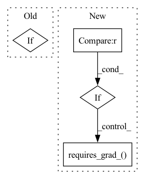

Pattern ID :7871
Before Change
def switch_model_on(model, list_trained_pars, update_mode):
for _n, _p in model.named_parameters():
_p.requires_grad_(True)
if "new" in _n or update_mode == "heads_bn" and "bn" in _n or update_mode == "full":
list_trained_pars.append(_p)
print(_n, "trainable parameters")
After Change
def switch_model_on(model, ckpt, list_trained_pars):
param_names = ckpt["model_weights"].keys()
for _n,_p in model.named_parameters():
if _p.dtype==torch.float32 and _n in param_names:
if not "new" in _n and not "bn" in _n:
_p.requires_grad_(True)
print(_n, "grads on")
else:
_p.requires_grad_(True)
list_trained_pars.append(_p)
print(_n, "trainable pars")
elif _p.dtype==torch.float32 and not _n in param_names:
_p.requires_grad_( True)
list_trained_pars.append(_p)
print(_n, "new pars, trainable")
// AVERAGE PRECISION COMPUTATION
// adapted from Matterport Mask R-CNN implementationIn pattern: SUPERPATTERN
Frequency: 3
Non-data size: 4
Instances Fragment ID: 28051628
Project Name: alexts1980/covid-ct-mask-net
Commit Name: 18c185c1d9c418f255497fa3159a2fae0f4aa8bc
Time: 2020-10-21
Author: ater1980@gmail.com
File Name: utils.py
M Class Name: AnonimousClass
N Class Name: AnonimousClass
M Method Name: switch_model_on(3)
N Method Name: switch_model_on(3)
M Parent Class:
N Parent Class:
M File Name: utils.py
N File Name: utils.py
M Start Line: 21
M End Line: 29
N Start Line: 15
N End Line: 33
Before Change
self.image_size = image_size
fpn_norm_layer = kwargs.pop("fpn_norm_layer", nn.BatchNorm2d)
// create modules
if pretrained_backbone:
backbone_norm_layer = FrozenBatchNorm2d
else:
backbone_norm_layer = nn.BatchNorm2dAfter Change
// freeze layers (自己看效果)进行freeze
for freeze_layer in backbone_freeze:
for name, parameter in backbone.named_parameters():
if freeze_layer in name :
parameter.requires_grad_( False)
return_layers = {"layer3": "P3", "layer5": "P4", "layer7": "P5"} // "layer2": "P2",
in_channels_list = efficientnet_out_channels[backbone_name] // bifpn
super(EfficientNetBackBoneWithBiFPN, self).__init__(OrderedDict({ Fragment ID: 28051643
Project Name: jintao-huang/efficientdet_pytorch
Commit Name: 63fbf56348d5f299bf5757f5c4b0fa68a0a7adca
Time: 2020-05-24
Author: hjt_study@qq.com
File Name: models/backbone.py
M Class Name: EfficientNetBackBoneWithBiFPN
N Class Name: EfficientNetBackBoneWithBiFPN
M Method Name: __init__(2)
N Method Name: __init__(6)
M Parent Class: nn.Sequential
N Parent Class: nn.Sequential
M File Name: models/backbone.py
N File Name: models/backbone.py
M Start Line: 24
M End Line: 34
N Start Line: 24
N End Line: 45
Before Change
if self.AUG.apply_ada:
assert self.AUG.ada_aug_type != "W/O", "Please select diffentiable augmentation type!"
if self.AUG.ada_aug_type == "cr":
self.AUG.series_augment = cr.apply_cr_aug
elif self.AUG.ada_aug_type == "diffaug":
self.AUG.series_augment = diffaug.apply_diffaugAfter Change
else:
raise NotImplementedError
if self.AUG.series_augment in ["simclr_basic", "simclr_hq", "simclr_hq_cutout", "byol", \
"blit", "geom", "color", "filter", "noise", "cutout", "bg", "bgc", "bgcf", "bgcfn", "bgcfnc"] and DDP:
self.AUG.series_augment = DDP(self.AUG.series_augment, device_ids=[device], broadcast_buffers=False)
self.AUG.series_augment.requires_grad_( False)
if self.AUG.parallel_augment in ["simclr_basic", "simclr_hq", "simclr_hq_cutout", "byol", \
"blit", "geom", "color", "filter", "noise", "cutout", "bg", "bgc", "bgcf", "bgcfn", "bgcfnc"] and DDP:
self.AUG.parallel_augment = DDP(self.AUG.parallel_augment, device_ids=[device], broadcast_buffers=False)
self.AUG.parallel_augment.requires_grad_(False) Fragment ID: 28051623
Project Name: postech-cvlab/pytorch-studiogan
Commit Name: 8ca218606f1796f48b734942ce21d931a54cc3d1
Time: 2021-10-05
Author: joonghyuk4727@gmail.com
File Name: src/config.py
M Class Name: Configurations
N Class Name: Configurations
M Method Name: define_augments(3)
N Method Name: define_augments(1)
M Parent Class: object
N Parent Class: object
M File Name: src/config.py
N File Name: src/config.py
M Start Line: 481
M End Line: 544
N Start Line: 481
N End Line: 548